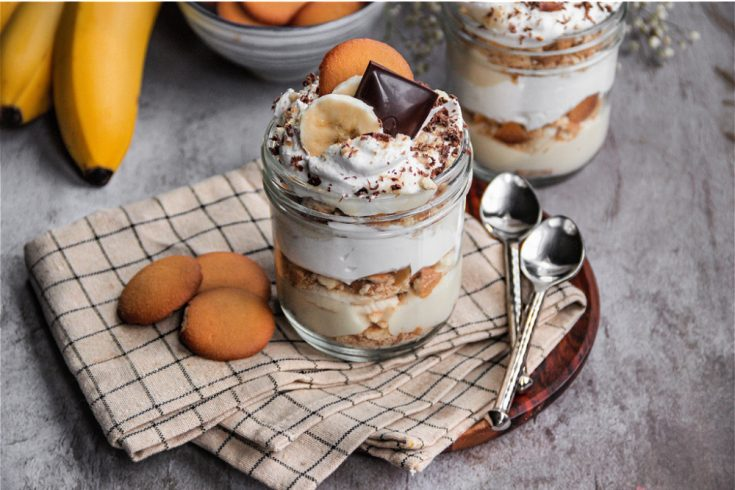
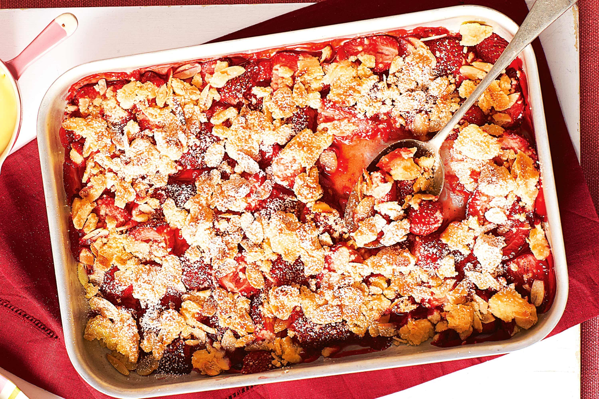
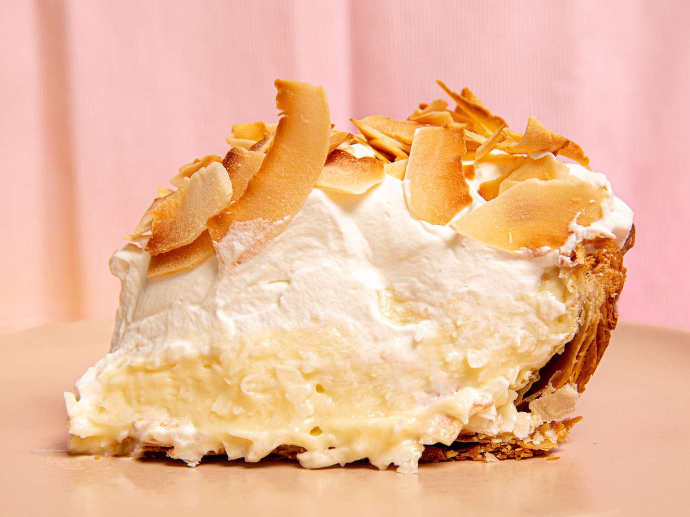
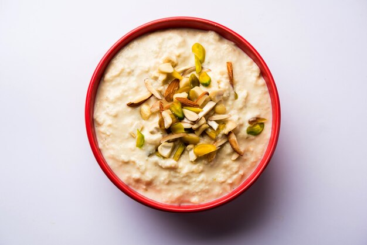

Preheat your oven to 350°F (175°C) and grease and flour two 9-inch round cake pans. In a large bowl, mix together 2 cups of white sugar, 1 ¾ cups of all-purpose flour, ¾ cup of unsweetened cocoa powder, 1 ½ teaspoons of baking soda, and 1 teaspoon of salt. Add 2 large eggs, 1 cup of milk, ½ cup of vegetable oil, and 2 teaspoons of vanilla extract to the dry ingredients and beat on medium speed for 2 minutes. Stir in 1 cup of boiling water until well combined (the batter will be thin). Pour the batter evenly into the prepared pans and bake for 30 to 35 minutes, or until a toothpick inserted into the center comes out clean. Allow the cakes to cool in the pans for 10 minutes, then remove them from the pans and transfer them to a wire rack to cool completely. Once cool, you can frost and assemble the cake as desired.
BANANA PUDDING

Ingredients
3/4 cup of white sugar
1/3 cup of all-purpose flour
1/4 teaspoon of salt
3 cups of milk
3 large eggs, separated
2 teaspoons of vanilla extract
1 package of vanilla wafers
5 ripe bananas, sliced2
Preparation
Combine sugar, flour, and salt in a pot. Gradually stir in milk. Cook over medium heat, stirring constantly until thickened. Beat egg yolks slightly and gradually stir into the mixture. Cook for 2 minutes, remove from heat, and add vanilla. Layer wafers, bananas, and pudding in a dish and chill. Optionally, beat egg whites to soft peaks, add sugar, and brown on the pudding as a meringue topping..
ROASTED-STRAWBERRY-CRUMBLE

Ingredients
4 cups of strawberries, hulled and halved
1/2 cup of white sugar
1 tablespoon of cornstarch
1 cup of all-purpose flour
1/2 cup of rolled oats
1/2 cup of brown sugar
1/2 cup of cold butter, cubed
Preparation
Toss strawberries with sugar and cornstarch, spread on a baking tray, and roast at 375°F (190°C) for about 20 minutes. For the crumble, mix flour, oats, and brown sugar, then cut in butter until crumbly. Sprinkle over strawberries and bake until topping is golden, about 30 minutes.
COCUNUT CREAM PIE

Ingredients
1 pie crust
1 cup of white sugar
1/2 cup of all-purpose flour
1/4 teaspoon of salt
3 cups of coconut milk
2 eggs, beaten
1 teaspoon of vanilla extract
1 cup of flaked coconut
Preparation
Bake the pie crust and let it cool. Combine sugar, flour, and salt in a pot. Gradually stir in coconut milk and cook over medium heat until thickened. Temper eggs with some of the hot mix, then return all to the pot, cooking for 2 minutes. Remove from heat, add vanilla and coconut, pour into crust, and chill. Top with whipped cream and toasted coconut flakes.
RABRI KHEER

Ingredients
1/2 cup of basmati rice
4 cups of whole milk
1/2 cup of sugar
1/2 teaspoon of cardamom powder
A pinch of saffron strands
1/2 cup of mixed nuts (almonds, pistachios), chopped
1 cup of rabri (thickened sweetened milk)/li>
Preparation
Soak rice for 30 minutes, then cook with milk, stirring constantly until the milk reduces and the rice is soft. Add sugar, cardamom, and saffron, cooking until thick. Add nuts and rabri, cook for a few more minutes, then chill before serving.
ICE CREAM
Ingredients
2 cups of heavy cream
1 cup of whole milk
3/4 cup of white sugar
1 tablespoon of vanilla extract
Preparation
Whisk together cream, milk, and sugar until sugar is dissolved. Stir in vanilla. Churn in an ice cream maker according to the manufacturer's instructions. Transfer to a container and freeze until firm.